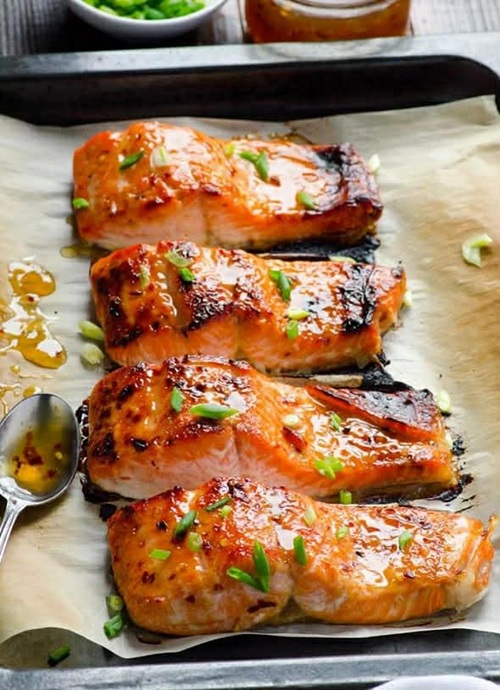
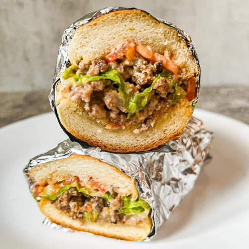
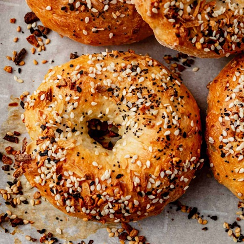
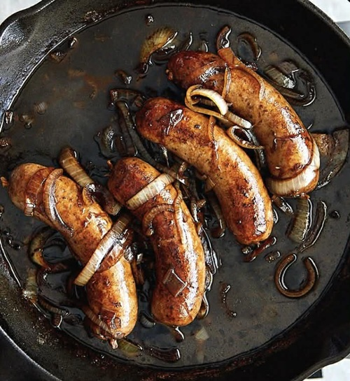
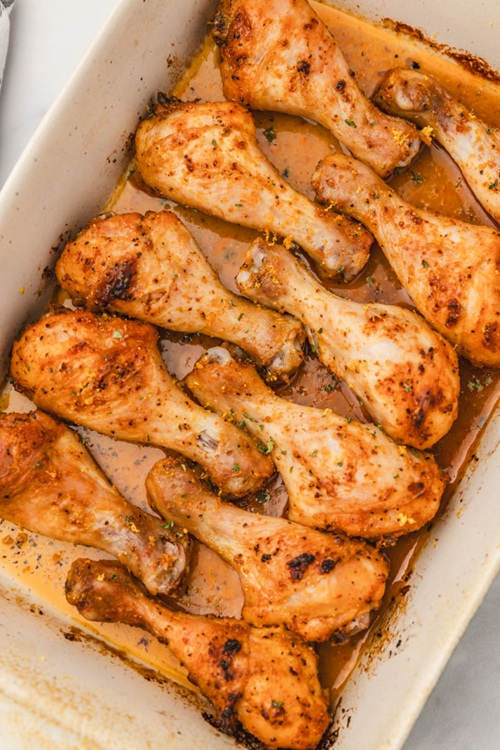
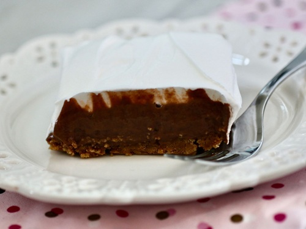
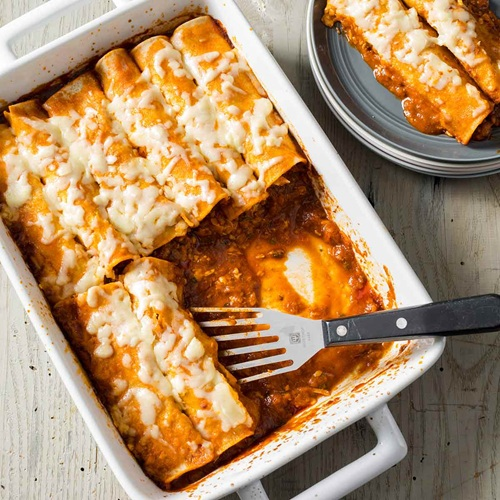
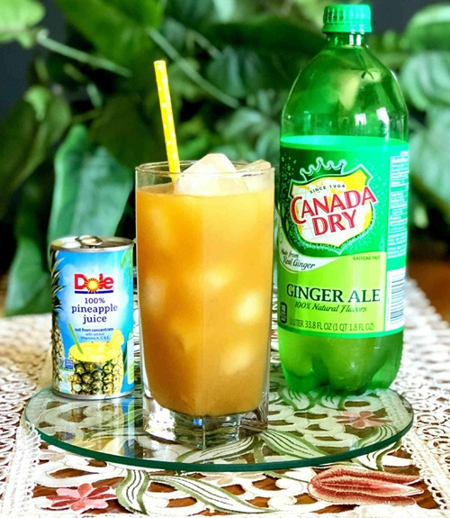

Thai Chili Soy Salmon
Ingredients:
- 1–2 salmon fillets
- 2 tbsp soy sauce
- 2–3 tbsp sweet Thai chili sauce
- ½ tsp garlic powder

Chopped Cheese
Ingredients:
- 1 lb ground beef (80/20 for flavor)
- 1 small onion, diced
- 4 slices American cheese
- 2 hero rolls (or hoagie/sub rolls)
- 2 tbsp mayo
- 1 tbsp ketchup
- 1 tsp yellow mustard
- Shredded iceberg lettuce
- 1 tomato, sliced
- Pickles (optional but very Matty energy)
- Salt & black pepper to taste
- Neutral oil or butter

Simple Cottage Cheese Bagels
Ingredients:
- 1 cup self-rising flour
- 1 cup full-fat cottage cheese
- 1 large egg beaten, for egg wash
- Toppings if wanted: sesame seeds, everything bagel seasoning,
shredded asiago cheese, or poppy seeds

Pan Fried Beer And Onion Bratwurst
Ingredients:
- 4 bratwurst sausages
- 2 Tbsp unsalted butter (or use olive oil, vegetable or corn oil)
- 1 sweet onion (cut in halves or quarters and sliced)
- 1 cup Belgian ale (or any dark, malty beer of your choice)

Stupid Simple Baked Chicken Legs
Ingredients:
- Chicken drumsticks
- Lemon Pepper seasoning
- BBQ Sauce- Any brand or kind you prefer
- Or Any seasoning you like or Any Sauce

Homemade Pork Carnitas
Ingredients:
- 3 - 3.5 lbs - Pork Butt(Pork Shoulder)
- 2 lbs - Manteca (Mexican Lard, can use any lard, Manetac tastes the best)
- 2 - Oranges
- 5 - Cloves
- 2 - Bay leaves
- 1 tsp - Cumin
- 5 oz - Evaporated Milk
- 2tsp - Mexian Oregano
- 1 to 2 packages Tortillas (corn or flour)
- 1 package melting cheese (chihuahua is preferred)
- 1 spanish/sweet onion
Notes:
(General rule: 1 lb Lard for every 3 lbs of Meat) I did use 2 lbs of lard to cover more of the meat in the pot. You want 80% coverage of the meat in the lard.Dutch Oven is preferred, but a big pot that can go in oven works as well.
Pizza Braid
Ingredients: Use as much or as little of the ingredients you want
- 1 can of pillsbury dough (can be any can you like)
- 1 can pizza sauce
- 1 bag mozzarella cheese
- Optional: 1 package pepperoni slices or whatever toppings you like

Charlie Brown Pie
Ingredients:
- 2 cups crushed graham crackers
- ⅓ cup white sugar
- ¼ cup butter
- 3 ½ cups cold milk
- 1 (5.9 ounce) package instant chocolate pudding mix
- 1 (8 ounce) container frozen whipped topping (such as Cool Whip®), thawed

Chicken Enchiladas
Ingredients:
- 1 Rotisserie Chicken
- 1-2 10 oz cans of Mild Red Enchilada Sauce
- 1 package flour tortillas or corn tortillas
- 1 container sour cream
- 1 package of shredded cheese, sharp cheddar or chihuahua melting cheese
- Optional: 1 can black olives
- Optional: 1 spanish/sweet onion

Simple Pineapple Ginger Ale
Ingredients:
- 1 can Dole pineapple juice
- 1 can Canada Dry Ginger Ale
Mushroom Rice
Ingredients:
- 1 16 oz Mini Bella Mushrooms
- 2 cups of white rice
- Adobo seasoning, season to taste
- 1 bunch of green onions
- Splash of olive oil
- Salt, to taste